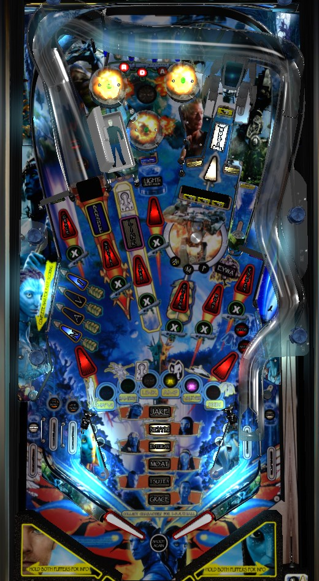

Not to be confused with Avatar: The Battle for Pandora (Jersey Jack, 2024).
Repeatedly shooting the Link lane immediately to the right of the left ramp will start Link Multiball, and repeatedly shooting the flashing striped targets in the center-right and upper right will start Amp Suit Multiball. Try to stack these to make a 4-ball multiball where almost everything in the game is lit with a red arrow for a Jackpot. Completing the top lanes lights a shot multiplier at the next X shot you make: Link, Amp, center target, and left ramp are the best ones. If you're a good on-the-fly shooter, looping the left ramp from the right flipper in single ball play can be decent points in a pinch.
Avatar has only one skill shot: make the flashing top lane. This scores 250,000 points the first time it is made, and increases by 25,000 points each subsequent time. Flipper lane change will move which lane is flashing; it's always the center lane by default. There is no additional "hands-free" bonus for making the skill shot without using lane change. A short plunge can come down the right orbit instead of making it to the top lanes, but this is not desirable. There is no super skill shot of any kind.
Roll through an unlit top lane to light it. Light all 3 top lanes to score 10,000 points and advance the bonus multiplier toward its maximum of 25x. Just as with the skill shot, flipper lane change is available. Completing the top lanes also qualifies a shot multiplier, which is discussed further in the next section.
The first pop bumper hit scores 3,000 points, and every subsequent bumper scores 1,000 more than the last, up to a maximum of 20,000. If more than about 2 seconds pass without a pop bumper being registered, the game will assume that all balls have left the bumper area, and the pop bumper value will be reset back to 3,000 points. If a multiball is running, all pop bumpers score 3,000 points. If Pops at Max has been scored from an Eywa mystery award, all bumpers will score 20,000 points on the next trip to the pops.
Completing the top lanes causes the X inserts in front of 7 of the game's major shots to start flashing. These X inserts are located at the left orbit, left ramp, Link lock, center Unobtainum target, the Amp Suit target structure, the Eywa captive ball, and the right orbit. When the X inserts are flashing, the next shot made to any of them will lock in a 2x multiplier on all scoring at that shot for the rest of the ball. If 2x multipliers are placed at all 7 X shots, the next completion of the top lanes will light a single 3x shot multiplier, indicated by a flashing insert that moves on its own between the X shots. There is no further progression past this point; shot multipliers are maxed out when one roving shot is flashing for 3x and all of the other X shots are lit for 2x. All shot multipliers are lost when the ball drains. Throughout this guide, listed score values assume that the shot in question does not have a shot multiplier.
If you are good at on-the-fly ramp shooting, try to put a shot multiplier at the left ramp as soon as possible. If you are not able to repeatedly loop the left ramp, focus instead on placing shot multipliers at the Link lock, the Amp Suit target banks, or the Unobtainium center target.
Avatar wants you to complete the 6 tasks laid out horizontally at the bottom of the table, which I refer to as the Rainbow Lights: Na'Vi (purple), Banshee (green), Link (white), Amp (yellow), Valkyrie (pink), and Seeds (orange). Each of the Rainbow Lights corresponds to its own mode or multiball. Simply starting the corresponding mode or multiball will cause that Rainbow Light to be lit solidly. Completing the corresponding mode or multiball will cause that Rainbow Light to flash. Solidly lit Rainbow Lights are lost at the end of the ball in play, but flashing Rainbow Lights are locked in for the entire rest of the game (or until Final Battle wizard mode is played). If all 6 Rainbow Lights are either lit or flashing in any combination at the same time, Final Battle will be lit at the Unobtainium target in the center of the playfield.
Na'Vi Scoring and Na'Vi Multiball: purple light
Hitting one of the Navi targets in the lower left lights that target and scores 75,000 points. Hitting an already lit Navi target scores 10,000 points. On default settings, if you hit a lit Navi target but one of its neighbors is not lit, that neighbor will be lit for you; on harder settings, you do need to hit all 4 targets independently. Spelling Navi qualifies Na'Vi Scoring. Na'Vi scoring is a hurry-up mode that starts at 750,000 points (+50,000 each time Na'Vi Scoring is started) and counts down to 400,000 points. The goal of Na'Vi Scoring is to collect 6 Characters by shooting their lit shots: Grace at the left orbit, Neytiri at the left ramp, Jake at the Link lock, Eytukan at the Amp Suit target structure, Mo'At at the captive ball, and Tsu'Tey at the right orbit. Making one of these shots when lit collects that character and scores the value remaining on the hurry-up countdown. Collecting all 6 characters upgrades the Navi targets so that the next completion of Navi starts Na'Vi Multiball instead. It's pretty much impossible to collect all 6 characters in a single playthrough of Na'Vi Scoring. Luckily, there's one other way to collect characters: complete the three in lanes by lighting them to qualify The Bond, then shoot whichever red arrow is lit within about 3 seconds to earn that character without starting Na'Vi Scoring. If all 6 characters are collected before the hurry-up runs out, you can collect the remaining Na'Vi Scoring value from the center Unobtainium target.
After collecting all 6 characters, spelling Navi again to qualify multiball, then hitting any Navi target one more time, Na'Vi Multiball begins, and the purple Rainbow Light is solidly lit. This starts as a 2-ball multiball. In Phase 1, collect jackpots from each of the 6 Character shots worth 150,000 points each. Phase 2, requires 4 shots to any of the Navi targets, which each score a double jackpot worth 300,000 points. Phase 3 is a super jackpot collected at the center Unobtainium target whose value is equal to the sum of all jackpots and double jackpots collected in the first two phases. Collecting the super jackpot resets the progress back to phase 1 with the base jackpot value increased by 100,000 points and the Na'Vi purple Rainbow Light flashing. Shot multipliers can be used to multiply all single jackpots and the super jackpot, but not the double jackpots, because the Navi targets are not an X shot.
Na'Vi is the hardest Rainbow Light to qualify, and usually the least rewarding too.
Ride a Banshee: green light
Each shot to the left ramp awards a letter in the word Banshee. Depending on game settings and the number of times Ride a Banshee has been played, you may get as many as 4 of the letters in Banshee spotted for you for free. Spelling Banshee starts the Ride a Banshee mode. Starting Ride a Banshee will solidly light the green Rainbow Light. Ride a Banshee is a 25-second mode that wants you to shoot 5 lit shots. Lit shots start at 200,000 points, and each subsequent shot scores 100,000 more than the last. The left ramp is always lit during Ride a Banshee; each time Ride a Banshee is replayed, one additional shot will be lit as well, and collecting a Banshee award from not-the-left-ramp will unlight the shot in question. Making 5 shots counts as completing the mode and causes the green Rainbow Light to flash. However, you can still keep shooting the left ramp as long as there is still time on the clock: the left ramp value during Banshee continues to increase past the 5th shot, and maxes out at 1,000,000 points.
If you do not make all 5 left ramp shots the first time, your progress is saved for the next time Ride a Banshee is played, and the lit shot value will be reset to 200,000 points.
Link Multiball: white light
Starting Link Multiball requires doing two things: first, lock a ball at the Link lane, and second, hit that locked ball to release it and start multiball. At the beginning of the game, it takes 1 Link lane shot to lock a ball, and 2 shots after that to start multiball. Each time Link Multiball is played, both of those requirements increase by one shot. Link Multiball starts as a 2-ball round. Starting Link Multiball solidly lights the white Rainbow Light. Jackpots are worth 250,000 points and are collected at any Navi target, any Seeds target, the captive ball, the Link lane, or the Unobtainium center target. The Link lane and Unobtainium center target are always lit for jackpots, but the other three locations will unlight when a jackpot is collected there and relight when a jackpot is collected somewhere else. The first jackpot scored at the Link lane will lock that ball and plunge one new ball; if 10 seconds pass without scoring another jackpot at the Link lane, the locked ball will be added to the playfield, upgrading Link Multiball to a 3-ball round. The Unobtainium center target scores a double jackpot worth 500,000 points instead of a single jackpot. After 15 total jackpots have been scored, the Link lane is lit for a super jackpot worth 3,000,000 points. After collecting the super jackpot, you have 10 seconds to hit the Link lane again for a double super jackpot worth 6,000,000 points. Collecting the double super jackpot causes the Link white Rainbow Light to flash. Collecting the double super jackpot also starts Victory Laps, where for as long as there are 2+ balls in play, any shot that scored a jackpot in phase 1 scores 350,000 points. If the double super jackpot times out, you advance to Victory Laps anyway, and it is no longer possible to make the white Rainbow Light flash on that playthrough of Link Multiball.
Amp Suit multiball: yellow light
Qualifying Amp Suit Multiball has two steps. First, you must start Amp Suit Battle at the 3-bank of standup targets behind the magnet. At first, one letter in Amp will be flashing, moving between the three every few seconds; hitting the flashing target instantly starts Amp Suit Battle. If you miss the flashing target, you have to hit all 3 targets once to start Amp Suit Battle. After any target in the 3-bank is hit, the magnet briefly activates, sending the ball careening in an effectively random direction. When Amp Suit Battle is started, the 3-bank is lowered into the playfield, revealing the rest of the mechanism. Now that Amp Suit Battle is running, you must score a total of 5 Amp Suit hits. The striped standup targets each score 1 hit worth 300,000 points, and the recessed bullseye target scores 2 hits worth 600,000 points. The final hit must be made at the recessed bullseye target, which scores 2,000,000 points and starts Amp Suit Multiball.
Starting Amp Suit Multiball lights the yellow Rainbow Light solidly and plunges two balls into play, starting Amp Suit as a 3-ball multiball. Six jackpots are lit: the left orbit, left ramp, Link lane, Unobtainium center target, captive ball, and right orbit. These jackpots all score 150,000 points. After collecting all six, 3 double jackpots are lit, which are collected by hitting any Navi target, any Amp target, and any Seeds target. After collecting all three, you must earn two separate super jackpots at the recessed Amp target under the robot toy. Earning both super jackpots causes the yellow Rainbow Light to flash and resets the entire multiball sequence, but with the base jackpot value increased by 200,000 points (making the first six jackpots worth 350,000 each and the three double jackpots worth 700,000 each, on the second lap). This continues until there is only one ball in play.
Amp Suit Multiball and Link Multiball are very easy to stack with one another; this is the easiest way to earn big points quickly.
Valkyrie: pink light
At the start of the game, it takes a total of 4 shots to either orbit to start Bomber Battle. Each time Bomber Battle is played, two additional shots to either orbit are required to restart it. In Bomber Battle, 5 shots are lit: both orbits, the left ramp, the Navi targets, and the Seeds targets. Hit any of these shots to score the Bomber award. For the Navi and Seeds targets, hitting any target in the bank of standups is acceptable. At first, all 5 shots are lit; after at least one Bomber award is earned, the shot that most recently gave a Bomber award will not be lit. Bomber awards start at 200,000 points, increase by 50,000 each time, and max at 1,000,000 points. Bomber award is a 25-second mode. Starting Bomber Battle lights the pink Rainbow Light solidly. To make the pink Rainbow Light flash, you need to collect 15 Bomber awards. This is almost impossible to do in a single trip through the mode unless a multiball is also in progress; if Bomber Battle ends before all 15 awards are earned, your progress will be saved for the next time Bomber Battle is played, but the Bomber award value is reset to 200,000 points. After reaching the 15 awards threshold, you can continue playing Bomber Battle for as long as there is still time, earning increasingly valuable Bomber awards.
Seeds Fast Scoring: orange light
At any given time, hitting either of the two standup targets in the lower right of the game counts as one Seeds shot. Making 3 Seeds shots qualifies Seeds Fast Scoring, at which point one further Seeds shot will actually start Seeds Fast Scoring (and solidly light the orange Rainbow Light). The number of shots needed to qualify Fast Scoring increases by 2 after each time Fast Scoring is played. Fast Scoring is a 25-second frenzy mode where any switch in the game scores the frenzy value. The frenzy value starts at 10,000 points the first time Fast Scoring is played; this starting value increases by 5,000 each time Fast Scoring is replayed, and the frenzy value can be increased during Fast Scoring by 1,000 at a time by making a Seeds shot. The goal of Fast Scoring is to hit 100 switches anywhere in the game. If you succeed, the Seeds insert will flash. If you fail, your progress is held over for the next time Fast Scoring is replayed. On its own, Fast Scoring is not very valuable, but it can be decent if stacked with a multiball. Like the other timed Rainbow Lights modes, you can continue playing Fast Scoring even after the 100-switch requirement is fulfilled. The best shot in Fast Scoring is the right orbit, which features a spinner and redirects the ball to the top lanes for some bumper hits as well.
If no multiball or timed feature is running and all six Rainbow Lights are either lit or flashing, shooting the Unobtainium center target starts Final Battle wizard mode. Final Battle is a 4-ball multiball. Any switch in the game scores 25,000 points. Making 75 switches anywhere in the game lights the center Unobtainium target for 5,000,000 points. However, if you still have more than 2 balls in play, consider not hitting the center target immediately, because the out lanes are lit for Unobtainium too. Making one out lane unlights that out lane, scores 10,000,000 points, and adds 10,000,000 to the value of the center target, for a total of 15,000,000. Now, making the other lit out lane- which can be moved with flipper lane change- scores 15,000,000 points and adds 15,000,000 to the value of the center target, for a total of 30,000,000 points. It can be hard to make the out lanes on purpose, but it's worth it if it happens. Collecting the value of the center Unobtainium target restarts Final Battle, plunging all 4 balls back into play, but with the switch requirement for lighting the Unobtainium target increased by 25 switches. Final Battle continues until there is just one ball left in play, at which point normal play resumes with all Rainbow Lights reset. If the second-to-last ball goes down an out lane, there is a brief grace period where you can hit the Unobtainium target to collect and reset Final Battle before the mode ends. The Unobtainium value is affected by shot multipliers, but shot multipliers cannot be earned during Final Battle, so it's extremely important to get a shot multiplier placed at the Unobtainium target BEFORE starting Final Battle.
Eywa Mystery is lit at the captive ball at seemingly random times: it's actually based on switch hits, but the game never tells you how close you are to lighting Eywa, not even in the status report. Hit the captive ball when Eywa is lit to receive a mystery award. Mystery awards can be lit and collected at pretty much any time, including during multiballs, timed features, and even Final Battle wizard mode. Some of the things that can appear include:
That list may not be exhaustive.
In normal play, the center Unobtainium target lights one out lane. If both out lanes are lit, the center target increases the Unobtainium award, which starts at 200,000 points and increases by 25,000 with each center target hit up to a maximum of 1,000,000 points. Making a lit out lane unlights that out lane and scores the Unobtainium value. The Unobtanium value is reset at the start of each ball.
Avatar has a conventional in/out lane setup, but with 2 in lanes on the left instead of 1. Making an unlit in lane lights it. Lit in lanes can be moved with flipper lane change. Lighting all 3 in lanes scores 100,000 starts The Bond, where you have about 3 seconds to shoot one lit flashing shot to collect that character toward starting Na'Vi Multiball. If you already have all 6 characters, The Bond can be scored at the center Unobtainium target. A successfull Bond shot is worth 250,000 points. In normal play, out lanes score 100,000 points or the Unobtainium value as described above. In Final Battle, when the center Unobtainium target is lit, out lanes score 10,000,000 (first time) or 15,000,000 (second time) and add their value to the Unobtainium target value as well.
Base bonus is simply a count of switch hits with no limit I have ever encountered; it can definitely be higher than 1,000,000 points. Bonus multiplier is advanced by completing the top lanes or from an Eywa mystery award, and maxes out at 25x. Neither base bonus nor bonus multiplier can be carried from ball to ball and there is no mid-ball bonus collect.
| If you need... | Try... |
| 500,000 points | ...starting Banshee, Bomber Battle, or Seeds Fast Scoring timed features. |
| 2,000,000 points | ...looping the left ramp repeatedly to get a good score out of Ride a Banshee, or collecting one or two awards during Na'Vi Scoring. |
| 5,000,000 points | ...starting a single Link or Amp Suit Multiball and playing it out. |
| 20,000,000 points | ...placing shot multipliers at the Link, Unobtainium target, and Amp, then stacking Link and Amp Suit Multiballs with each other. |
| 50,000,000 points or more | ...making a beeline toward Final Battle. If you're efficient about lighting the Rainbow Lights and aren't concerned about flashing them, you can get to Final Battle more quickly than you might expect, though collecting all of the characters to start Na'Vi Multiball can still be a little painful. Make sure that along the way you place a shot multiplier at the center Unobtainium target so that Final Battle super jackpots get multiplied. |